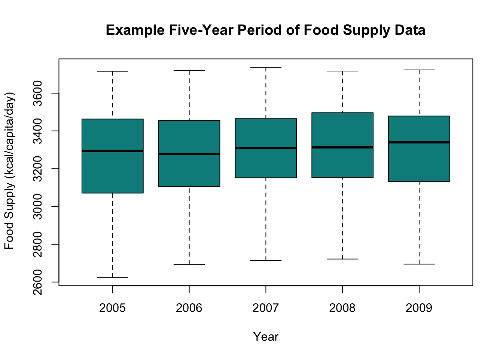
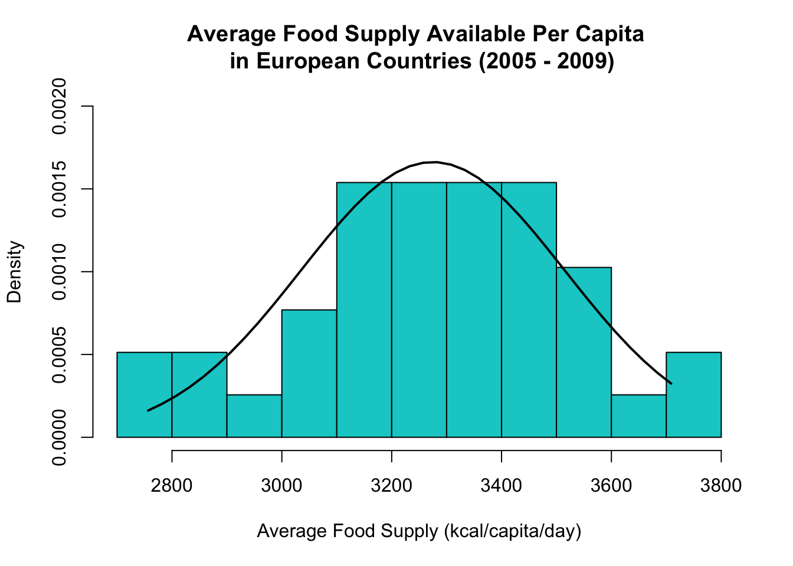
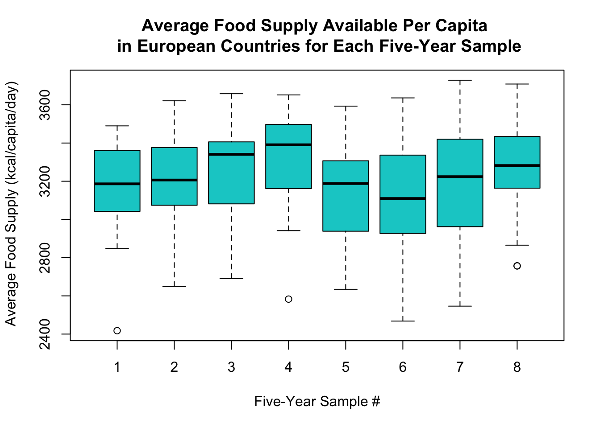

The data I will be using to perform my study was sourced from the Food and Agriculture Organization (FAO) of the United Nations, and provides the food supply available in each European country per capita, per day, with units of kcal/capita/day. The supply figures given represent an average supply available per person, based on dividing a yearly average total daily supply of food by the present in-country population within the present geographical borders–for which mid-year estimates published by the United Nations Population Division are used. It should therefore be noted that the values given only approximate what may be consumed by individuals on a daily basis, and does not take into account the degree of losses of edible food and nutrients in the household, such as due to storage, preparation and cooking, or that foods may not be consumed in their primary raw form.
Furthermore, the FAO received the forty-year supply data annually in the form of official statistics from FAO member countries. These statistics are calculated based off of data originating from surveys, administrative data, estimates based on expert observations, or a combination of the three. Lastly, the data collection method was up to the individual country, which could potentially affect the reliability and comparability of the data.
The box plots below are a depiction of the raw data retreived from the FAO database.
five_year_reps <- c(rep("2005",length(na.omit(foodsupply[1,,8]))),rep("2006",length(na.omit(foodsupply[2,,8]))),rep("2007",length(na.omit(foodsupply[3,,8]))),rep("2008",length(na.omit(foodsupply[4,,8]))),
rep("2009",length(na.omit(foodsupply[5,,8]))))
fs <- c(na.omit(foodsupply[1,,8]),na.omit(foodsupply[2,,8]),na.omit(foodsupply[3,,8]),
na.omit(foodsupply[4,,8]),na.omit(foodsupply[5,,8]))
boxplot(fs~five_year_reps,col = "cyan4",xlab = "Year",ylab = " Food Supply (kcal/capita/day)",
main = "Example Five-Year Period of Food Supply Data")
I used a one-sample t-test to determine whether per capita average food supplies for European countires over five-year periods were significantly different at a 0.05 significance level from the European continental figure for the same time range. That is to say, I am looking to see if there is strong enough evidence in any five-year sample to reject the null hypothesis that the difference between the true sample mean and comparison value is zero.
This significance test makes four main assumptions that need to be met in order to have confidence in the results. Included are the requirements that the dependent variable (five-year average food supply per capita, per day) is continuous, observations are independent of one another, and that the dependent variable is approximatley normally distributed and does not contain any extreme outliers.
The variable is continuous because it can take on any value within the range occupied by the supply figures, it is independent because the values come out of different European countries, it is distributed approximately normal in all samples as exemplified by the overlay of a density curve on a histogram of one sample below, and does not contain any outliers that would significantly affect the results as depicted in the box plots below of all samples.
# Make hisogram of average food supplies for 2005-2009 and overlay a normal density curve
x <- country_avgs[8,]
hist(x,freq = F,main = "Average Food Supply Available Per Capita \n in European Countries (2005 - 2009)",
xlab = "Average Food Supply (kcal/capita/day)",col = "cyan3",ylim = c(0,0.002))
xfit <- seq(min(x,na.rm = T), max(x,na.rm = T),length.out = length(na.omit(x)))
yfit <- na.omit(dnorm(x = xfit,mean = mean(x,na.rm = T),sd = sd(x,na.rm = T)))
lines(xfit,yfit, col = "black",lwd = 2)
# Make box plots of all 8 five-year samples of averaged food supply data
sample_reps <- c(rep("1",length(na.omit(country_avgs[1,]))),rep("2",length(na.omit(country_avgs[2,]))),
rep("3",length(na.omit(country_avgs[3,]))),rep("4",length(na.omit(country_avgs[4,]))),
rep("5",length(na.omit(country_avgs[5,]))),rep("6",length(na.omit(country_avgs[6,]))),
rep("7",length(na.omit(country_avgs[7,]))),rep("8",length(na.omit(country_avgs[8,]))))
c <- c(na.omit(country_avgs[1,]),na.omit(country_avgs[2,]),na.omit(country_avgs[3,]),
na.omit(country_avgs[4,]),na.omit(country_avgs[5,]),na.omit(country_avgs[6,]),na.omit(country_avgs[7,]),
na.omit(country_avgs[8,]))
boxplot(c~sample_reps,col = "cyan3",xlab = "Five-Year Sample #",ylab = " Average Food Supply (kcal/capita/day)",
main = "Average Food Supply Available Per Capita \n in European Countries for Each Five-Year Sample")